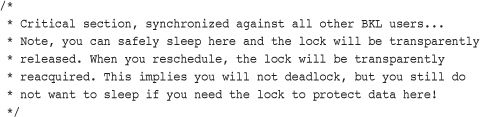

The previous chapter discussed the sources of and solutions to race conditions. Thankfully, the Linux kernel provides a family of synchronization methods. The Linux kernel’s synchronization methods enable developers to write efficient and race-free code. This chapter discusses these methods and their interfaces, behavior, and use.
We start our discussion of synchronization methods with atomic operations because they are the foundation on which other synchronization methods are built. Atomic operations provide instructions that execute atomically—without interruption. Just as the atom was originally thought to be an indivisible particle, atomic operators are indivisible instructions. For example, as discussed in the previous chapter, an atomic increment can read and increment a variable by one in a single indivisible and uninterruptible step. Recall the simple race in incrementing an integer that we discussed in the previous chapter:
With atomic operators, this race does not—indeed, cannot—occur. Instead, the outcome is always one of the following:
Or
The ultimate value, always nine, is correct. It is never possible for the two atomic operations to occur on the same variable concurrently. Therefore, it is not possible for the increments to race.
The kernel provides two sets of interfaces for atomic operations—one that operates on integers and another that operates on individual bits. These interfaces are implemented on every architecture that Linux supports. Most architectures contain instructions that provide atomic versions of simple arithmetic operations. Other architectures, lacking direct atomic operations, provide an operation to lock the memory bus for a single operation, thus guaranteeing that another memory-affecting operation cannot occur simultaneously.
The atomic integer methods operate on a special data type, atomic_t. This special type is used, as opposed to having the functions work directly on the C int type, for several reasons. First, having the atomic functions accept only the atomic_t type ensures that the atomic operations are used only with these special types. Likewise, it also ensures that the data types are not passed to any nonatomic functions. Indeed, what good would atomic operations be if they were not consistently used on the data? Next, the use of atomic_t ensures the compiler does not (erroneously but cleverly) optimize access to the value—it is important the atomic operations receive the correct memory address and not an alias. Finally, use of atomic_t can hide any architecture-specific differences in its implementation. The atomic_t type is defined in <linux/types.h>:
typedef struct {
volatile int counter;
} atomic_t;
Despite being an integer, and thus 32 bits on all the machines that Linux supports, developers and their code once had to assume that an atomic_t was no larger than 24 bits in size. The SPARC port in Linux has an odd implementation of atomic operations: A lock was embedded in the lower 8 bits of the 32-bit int (it looked like Figure 10.1). The lock was used to protect concurrent access to the atomic type because the SPARC architecture lacks appropriate support at the instruction level. Consequently, only 24 usable bits were available on SPARC machines. Although code that assumed that the full 32-bit range existed would work on other machines; it would have failed in strange and subtle ways on SPARC machines—and that is just rude. Recently, clever hacks have allowed SPARC to provide a fully usable 32-bit atomic_t, and this limitation is no more.
Figure 10.1. Old layout of the 32-bit atomic_t on SPARC.
The declarations needed to use the atomic integer operations are in <asm/atomic.h>. Some architectures provide additional methods that are unique to that architecture, but all architectures provide at least a minimum set of operations that are used throughout the kernel. When you write kernel code, you can ensure that these operations are correctly implemented on all architectures.
Defining an atomic_t is done in the usual manner. Optionally, you can set it to an initial value:
Operations are all simple:
If you ever need to convert an atomic_t to an int, use atomic_read():
printk("%d\n", atomic_read(&v)); /* will print "7" */
A common use of the atomic integer operations is to implement counters. Protecting a sole counter with a complex locking scheme is overkill, so instead developers use atomic_inc() and atomic_dec(), which are much lighter in weight.
Another use of the atomic integer operators is atomically performing an operation and testing the result. A common example is the atomic decrement and test:
int atomic_dec_and_test(atomic_t *v)
This function decrements by one the given atomic value. If the result is zero, it returns true; otherwise, it returns false. A full listing of the standard atomic integer operations (those found on all architectures) is in Table 10.1. All the operations implemented on a specific architecture can be found in <asm/atomic.h>.
Table 10.1. Atomic Integer Methods
The atomic operations are typically implemented as inline functions with inline assembly. In the case where a specific function is inherently atomic, the given function is usually just a macro. For example, on most architectures, a word-sized read is always atomic. That is, a read of a single word cannot complete in the middle of a write to that word. The read always returns the word in a consistent state, either before or after the write completes, but never in the middle. Consequently, atomic_read() is usually just a macro returning the integer value of the atomic_t:
Atomicity Versus Ordering
The preceding discussion on atomic reading begs a discussion on the differences between atomicity and ordering. As discussed, a word-sized read always occurs atomically. It never interleaves with a write to the same word; the read always returns the word in a consistent state—perhaps before the write completes, perhaps after, but never during. For example, if an integer is initially 42 and then set to 365, a read on the integer always returns 42 or 365 and never some commingling of the two values. We call this atomicity.
Your code, however, might have more stringent requirements than this: Perhaps you require that the read always occurs before the pending write. This type of requirement is not atomicity, but ordering. Atomicity ensures that instructions occur without interruption and that they complete either in their entirety or not at all. Ordering, on the other hand, ensures that the desired, relative ordering of two or more instructions—even if they are to occur in separate threads of execution or even separate processors—is preserved.
The atomic operations discussed in this section guarantee only atomicity. Ordering is enforced via barrier operations, which we discuss later in this chapter.
In your code, it is usually preferred to choose atomic operations over more complicated locking mechanisms. On most architectures, one or two atomic operations incur less overhead and less cache-line thrashing than a more complicated synchronization method. As with any performance-sensitive code, however, testing multiple approaches is always smart.
With the rising prevalence of 64-bit architectures, it is no surprise that the Linux kernel developers augmented the 32-bit atomic_t type with a 64-bit variant, atomic64_t. For portability, the size of atomic_t cannot change between architectures, so atomic_t is 32-bit even on 64-bit architectures. Instead, the atomic64_t type provides a 64-bit atomic integer that functions otherwise identical to its 32-bit brother. Usage is exactly the same, except that the usable range of the integer is 64, rather than 32, bits. Nearly all the classic 32-bit atomic operations are implemented in 64-bit variants; they are prefixed with atomic64 in lieu of atomic. Table 10.2 is a full listing of the standard operations; some architectures implement more, but they are not portable. As with atomic_t, the atomic64_t type is just a simple wrapper around an integer, this type a long:
typedef struct {
volatile long counter;
} atomic64_t;
Table 10.2. Atomic Integer Methods
All 64-bit architectures provide atomic64_t and a family of arithmetic functions to operate on it. Most 32-bit architectures do not, however, support atomic64_t—x86-32 is a notable exception. For portability between all Linux’s supported architectures, developers should use the 32-bit atomic_t type. The 64-bit atomic64_t is reserved for code that is both architecture-specific and that requires 64-bits.
In addition to atomic integer operations, the kernel also provides a family of functions that operate at the bit level. Not surprisingly, they are architecture-specific and defined in <asm/bitops.h>.
What might be surprising is that the bitwise functions operate on generic memory addresses. The arguments are a pointer and a bit number. Bit zero is the least significant bit of the given address. On 32-bit machines, bit 31 is the most significant bit, and bit 32 is the least significant bit of the following word. There are no limitations on the bit number supplied; although, most uses of the functions provide a word and, consequently, a bit number between 0 and 31 on 32-bit machines and 0 and 63 on 64-bit machines.
Because the functions operate on a generic pointer, there is no equivalent of the atomic integer’s atomic_t type. Instead, you can work with a pointer to whatever data you want. Consider an example:
A listing of the standard atomic bit operations is in Table 10.3.
Table 10.3. Atomic Bitwise Methods
Conveniently, nonatomic versions of all the bitwise functions are also provided. They behave identically to their atomic siblings, except they do not guarantee atomicity, and their names are prefixed with double underscores. For example, the nonatomic form of test_bit() is __test_bit(). If you do not require atomicity (say, for example, because a lock already protects your data), these variants of the bitwise functions might be faster.
What the Heck Is a Nonatomic Bit Operation?
On first glance, the concept of a nonatomic bit operation might not make any sense. Only a single bit is involved; thus, there is no possibility of inconsistency. If one of the operations succeeds, what else could matter? Sure, ordering might be important, but we are talking about atomicity here. At the end of the day, if the bit has a value provided by any of the instructions, we should be good to go, right?
Let’s jump back to just what atomicity means. Atomicity requires that either instructions succeed in their entirety, uninterrupted, or instructions fail to execute at all. Therefore, if you issue two atomic bit operations, you expect two operations to succeed. After both operations complete, the bit needs to have the value as specified by the second operation. Moreover, however, at some point in time prior to the final operation, the bit needs to hold the value as specified by the first operation. Put more generally, real atomicity requires that all intermediate states be correctly realized.
For example, assume you issue two atomic bit operations: Initially set the bit and then clear the bit. Without atomic operations, the bit might end up cleared, but it might never have been set. The set operation could occur simultaneously with the clear operation and fail. The clear operation would succeed, and the bit would emerge cleared as intended. With atomic operations, however, the set would actually occur—there would be a moment in time when a read would show the bit as set—and then the clear would execute and the bit would be zero.
This behavior can be important, especially when ordering comes into play or when dealing with hardware registers.
The kernel also provides routines to find the first set (or unset) bit starting at a given address:
int find_first_bit(unsigned long *addr, unsigned int size)
int find_first_zero_bit(unsigned long *addr, unsigned int size)
Both functions take a pointer as their first argument and the number of bits in total to search as their second. They return the bit number of the first set or first unset bit, respectively. If your code is searching only a word, the routines __ffs() and ffz(), which take a single parameter of the word in which to search, are optimal.
Unlike the atomic integer operations, code typically has no choice whether to use the bitwise operations—they are the only portable way to set a specific bit. The only question is whether to use the atomic or nonatomic variants. If your code is inherently safe from race conditions, you can use the nonatomic versions, which might be faster depending on the architecture.
Although it would be nice if every critical region consisted of code that did nothing more complicated than incrementing a variable, reality is much crueler. In real life, critical regions can span multiple functions. For example, it is often the case that data must be removed from one structure, formatted and parsed, and added to another structure. This entire operation must occur atomically; it must not be possible for other code to read from or write to either structure before the update is completed. Because simple atomic operations are clearly incapable of providing the needed protection in such a complex scenario, a more general method of synchronization is needed: locks.
The most common lock in the Linux kernel is the spin lock. A spin lock is a lock that can be held by at most one thread of execution. If a thread of execution attempts to acquire a spin lock while it is already held, which is called contended, the thread busy loops—spins—waiting for the lock to become available. If the lock is not contended, the thread can immediately acquire the lock and continue. The spinning prevents more than one thread of execution from entering the critical region at any one time. The same lock can be used in multiple locations, so all access to a given data structure, for example, can be protected and synchronized.
Going back to the door and key analogy from the last chapter, spin locks are akin to sitting outside the door, waiting for the fellow inside to come out and hand you the key. If you reach the door and no one is inside, you can grab the key and enter the room. If you reach the door and someone is currently inside, you must wait outside for the key, effectively checking for its presence repeatedly. When the room is vacated, you can grab the key and go inside. Thanks to the key (read: spin lock), only one person (read: thread of execution) is allowed inside the room (read: critical region) at the same time.
The fact that a contended spin lock causes threads to spin (essentially wasting processor time) while waiting for the lock to become available is salient. This behavior is the point of the spin lock. It is not wise to hold a spin lock for a long time. This is the nature of the spin lock: a lightweight single-holder lock that should be held for short durations. An alternative behavior when the lock is contended is to put the current thread to sleep and wake it up when it becomes available. Then the processor can go off and execute other code. This incurs a bit of overhead—most notably the two context switches required to switch out of and back into the blocking thread, which is certainly a lot more code than the handful of lines used to implement a spin lock. Therefore, it is wise to hold spin locks for less than the duration of two context switches. Because most of us have better things to do than measure context switches, just try to hold the lock for as little time as possible1 Later in this chapter we discuss semaphores, which provide a lock that makes the waiting thread sleep, rather than spin, when contended.
1 This is especially important now that the kernel is preemptive. The duration that locks are held is equivalent to the scheduling latency of the system.
Spin locks are architecture-dependent and implemented in assembly. The architecture-dependent code is defined in <asm/spinlock.h>. The actual usable interfaces are defined in <linux/spinlock.h>. The basic use of a spin lock is
DEFINE_SPINLOCK(mr_lock);
spin_lock(&mr_lock);
/* critical region ... */
spin_unlock(&mr_lock);
The lock can be held simultaneously by at most only one thread of execution. Consequently, only one thread is allowed in the critical region at a time. This provides the needed protection from concurrency on multiprocessing machines. On uniprocessor machines, the locks compile away and do not exist; they simply act as markers to disable and enable kernel preemption. If kernel preempt is turned off, the locks compile away entirely.
Warning: Spin Locks Are Not Recursive!
Unlike spin lock implementations in other operating systems and threading libraries, the Linux kernel’s spin locks are not recursive. This means that if you attempt to acquire a lock you already hold, you will spin, waiting for yourself to release the lock. But because you are busy spinning, you will never release the lock and you will deadlock. Be careful!
Spin locks can be used in interrupt handlers, whereas semaphores cannot be used because they sleep. If a lock is used in an interrupt handler, you must also disable local interrupts (interrupt requests on the current processor) before obtaining the lock. Otherwise, it is possible for an interrupt handler to interrupt kernel code while the lock is held and attempt to reacquire the lock. The interrupt handler spins, waiting for the lock to become available. The lock holder, however, does not run until the interrupt handler completes. This is an example of the double-acquire deadlock discussed in the previous chapter. Note that you need to disable interrupts only on the current processor. If an interrupt occurs on a different processor, and it spins on the same lock, it does not prevent the lock holder (which is on a different processor) from eventually releasing the lock.
The kernel provides an interface that conveniently disables interrupts and acquires the lock. Usage is
DEFINE_SPINLOCK(mr_lock);
unsigned long flags;
spin_lock_irqsave(&mr_lock, flags);
/* critical region ... */
spin_unlock_irqrestore(&mr_lock, flags);
The routine spin_lock_irqsave()saves the current state of interrupts, disables them locally, and then obtains the given lock. Conversely, spin_unlock_irqrestore()unlocks the given lock and returns interrupts to their previous state. This way, if interrupts were initially disabled, your code would not erroneously enable them, but instead keep them disabled. Note that the flags variable is seemingly passed by value. This is because the lock routines are implemented partially as macros.
On uniprocessor systems, the previous example must still disable interrupts to prevent an interrupt handler from accessing the shared data, but the lock mechanism is compiled away. The lock and unlock also disable and enable kernel preemption, respectively.
What Do I Lock?
It is important that each lock is clearly associated with what it is locking. More important, you should protect data and not code. Despite the examples in this chapter explaining the importance of protecting the critical sections, it is the actual data inside that needs protection and not the code.
Big Fat Rule: Locks that simply wrap code regions are hard to understand and prone to race conditions. Lock data, not code.
Rather than lock code, always associate your shared data with a specific lock. For example, “the
struct foois locked byfoo_lock.” Whenever you access shared data, make sure it is safe. Most likely, this means obtaining the appropriate lock before manipulating the data and releasing the lock when finished.
If you always know before the fact that interrupts are initially enabled, there is no need to restore their previous state. You can unconditionally enable them on unlock. In those cases, spin_lock_irq() and spin_unlock_irq() are optimal:
DEFINE_SPINLOCK(mr_lock);
spin_lock_irq(&mr_lock);
/* critical section ... */
spin_unlock_irq(&mr_lock);
As the kernel grows in size and complexity, it is increasingly hard to ensure that interrupts are always enabled in any given code path in the kernel. Use of spin_lock_irq()therefore is not recommended. If you do use it, you had better be positive that interrupts were originally on or people will be upset when they expect interrupts to be off but find them on!
Debugging Spin Locks
The configure option
CONFIG_DEBUG_SPINLOCKenables a handful of debugging checks in the spin lock code. For example, with this option the spin lock code checks for the use of uninitialized spin locks and unlocking a lock that is not yet locked. When testing your code, you should always run with spin lock debugging enabled. For additional debugging of lock lifecycles, enableCONFIG_DEBUG_LOCK_ALLOC.
You can use the method spin_lock_init() to initialize a dynamically created spin lock (a spinlock_t that you do not have a direct reference to, just a pointer).
The method spin_trylock() attempts to obtain the given spin lock. If the lock is contended, rather than spin and wait for the lock to be released, the function immediately returns zero. If it succeeds in obtaining the lock, it returns nonzero. Similarly, spin_is_locked() returns nonzero if the given lock is currently acquired. Otherwise, it returns zero. In neither case does spin_is_locked() actually obtain the lock.2
2 Use of these two functions can lead to convoluted code. You should not frequently have to check the values of spin locks—your code should either always acquire the lock itself or always be called while the lock is already held. Some legitimate uses do exist, however, so these interfaces are provided.
Table 10.4 shows a complete list of the standard spin lock methods.
Table 10.4. Spin Lock Methods
As discussed in Chapter 8, “Bottom Halves and Deferring Work,” certain locking precautions must be taken when working with bottom halves. The function spin_lock_bh() obtains the given lock and disables all bottom halves. The function spin_unlock_bh() performs the inverse.
Because a bottom half might preempt process context code, if data is shared between a bottom-half process context, you must protect the data in process context with both a lock and the disabling of bottom halves. Likewise, because an interrupt handler might preempt a bottom half, if data is shared between an interrupt handler and a bottom half, you must both obtain the appropriate lock and disable interrupts.
Recall that two tasklets of the same type do not ever run simultaneously. Thus, there is no need to protect data used only within a single type of tasklet. If the data is shared between two different tasklets, however, you must obtain a normal spin lock before accessing the data in the bottom half. You do not need to disable bottom halves because a tasklet never preempts another running tasklet on the same processor.
With softirqs, regardless of whether it is the same softirq type, if data is shared by softirqs, it must be protected with a lock. Recall that softirqs, even two of the same type, might run simultaneously on multiple processors in the system. A softirq never preempts another softirq running on the same processor, however, so disabling bottom halves is not needed.
Sometimes, lock usage can be clearly divided into reader and writer paths. For example, consider a list that is both updated and searched. When the list is updated (written to), it is important that no other threads of execution concurrently write to or read from the list. Writing demands mutual exclusion. On the other hand, when the list is searched (read from), it is only important that nothing else writes to the list. Multiple concurrent readers are safe so long as there are no writers. The task list’s access patterns (discussed in Chapter 3, “Process Management”) fit this description. Not surprisingly, a reader-writer spin lock protects the task list.
When a data structure is neatly split into reader/writer or consumer/producer usage patterns, it makes sense to use a locking mechanism that provides similar semantics. To satisfy this use, the Linux kernel provides reader-writer spin locks. Reader-writer spin locks provide separate reader and writer variants of the lock. One or more readers can concurrently hold the reader lock. The writer lock, conversely, can be held by at most one writer with no concurrent readers. Reader/writer locks are sometimes called shared/exclusive or concurrent/exclusive locks because the lock is available in a shared (for readers) and an exclusive (for writers) form.
Usage is similar to spin locks. The reader-writer spin lock is initialized via
DEFINE_RWLOCK(mr_rwlock);
Then, in the reader code path:
read_lock(&mr_rwlock);
/* critical section (read only) ... */
read_unlock(&mr_rwlock);
Finally, in the writer code path:
write_lock(&mr_rwlock);
/* critical section (read and write) ... */
write_unlock(&mr_lock);
Normally, the readers and writers are in entirely separate code paths, such as in this example.
Note that you cannot “upgrade” a read lock to a write lock. For example, consider this code snippet:
read_lock(&mr_rwlock);
write_lock(&mr_rwlock);
Executing these two functions as shown will deadlock, as the write lock spins, waiting for all readers to release the shared lock—including yourself. If you ever need to write, obtain the write lock from the start. If the line between your readers and writers is muddled, it might be an indication that you do not need to use reader-writer locks. In that case, a normal spin lock is optimal.
It is safe for multiple readers to obtain the same lock. In fact, it is safe for the same thread to recursively obtain the same read lock. This lends itself to a useful and common optimization. If you have only readers in interrupt handlers but no writers, you can mix the use of the “interrupt disabling” locks. You can use read_lock() instead of read_lock_irqsave() for reader protection. You still need to disable interrupts for write access, à la write_lock_irqsave(), otherwise a reader in an interrupt could deadlock on the held write lock. See Table 10.5 for a full listing of the reader-writer spin lock methods.
Table 10.5. Reader-Writer Spin Lock Methods
A final important consideration in using the Linux reader-writer spin locks is that they favor readers over writers. If the read lock is held and a writer is waiting for exclusive access, readers that attempt to acquire the lock continue to succeed. The spinning writer does not acquire the lock until all readers release the lock. Therefore, a sufficient number of readers can starve pending writers. This is important to keep in mind when designing your locking. Sometimes this behavior is beneficial; sometimes it is catastrophic.
Spin locks provide a quick and simple lock. The spinning behavior is optimal for short hold times and code that cannot sleep (interrupt handlers, for example). In cases where the sleep time might be long or you potentially need to sleep while holding the lock, the semaphore is a solution.
Semaphores in Linux are sleeping locks. When a task attempts to acquire a semaphore that is unavailable, the semaphore places the task onto a wait queue and puts the task to sleep. The processor is then free to execute other code. When the semaphore becomes available, one of the tasks on the wait queue is awakened so that it can then acquire the semaphore.
Let’s jump back to the door and key analogy. When a person reaches the door, he can grab the key and enter the room. The big difference lies in what happens when another dude reaches the door and the key is not available. In this case, instead of spinning, the fellow puts his name on a list and takes a number. When the person inside the room leaves, he checks the list at the door. If anyone’s name is on the list, he goes over to the first name and gives him a playful jab in the chest, waking him up and allowing him to enter the room. In this manner, the key (read: semaphore) continues to ensure that there is only one person (read: thread of execution) inside the room (read: critical region) at one time. This provides better processor utilization than spin locks because there is no time spent busy looping, but semaphores have much greater overhead than spin locks. Life is always a trade-off.
You can draw some interesting conclusions from the sleeping behavior of semaphores:
• Because the contending tasks sleep while waiting for the lock to become available, semaphores are well suited to locks that are held for a long time.
• Conversely, semaphores are not optimal for locks that are held for short periods because the overhead of sleeping, maintaining the wait queue, and waking back up can easily outweigh the total lock hold time.
• Because a thread of execution sleeps on lock contention, semaphores must be obtained only in process context because interrupt context is not schedulable.
• You can (although you might not want to) sleep while holding a semaphore because you will not deadlock when another process acquires the same semaphore. (It will just go to sleep and eventually let you continue.)
• You cannot hold a spin lock while you acquire a semaphore, because you might have to sleep while waiting for the semaphore, and you cannot sleep while holding a spin lock.
These facts highlight the uses of semaphores versus spin locks. In most uses of semaphores, there is little choice as to what lock to use. If your code needs to sleep, which is often the case when synchronizing with user-space, semaphores are the sole solution. It is often easier, if not necessary, to use semaphores because they allow you the flexibility of sleeping. When you do have a choice, the decision between semaphore and spin lock should be based on lock hold time. Ideally, all your locks should be held as briefly as possible. With semaphores, however, longer lock hold times are more acceptable. Additionally, unlike spin locks, semaphores do not disable kernel preemption and, consequently, code holding a semaphore can be preempted. This means semaphores do not adversely affect scheduling latency.
A final useful feature of semaphores is that they can allow for an arbitrary number of simultaneous lock holders. Whereas spin locks permit at most one task to hold the lock at a time, the number of permissible simultaneous holders of semaphores can be set at declaration time. This value is called the usage count or simply the count. The most common value is to allow, like spin locks, only one lock holder at a time. In this case, the count is equal to one, and the semaphore is called either a binary semaphore (because it is either held by one task or not held at all) or a mutex (because it enforces mutual exclusion). Alternatively, the count can be initialized to a nonzero value greater than one. In this case, the semaphore is called a counting semaphore, and it enables at most count holders of the lock at a time. Counting semaphores are not used to enforce mutual exclusion because they enable multiple threads of execution in the critical region at once. Instead, they are used to enforce limits in certain code. They are not used much in the kernel. If you use a semaphore, you almost assuredly want to use a mutex (a semaphore with a count of one).
Semaphores were formalized by Edsger Wybe Dijkstra3 in 1968 as a generalized locking mechanism. A semaphore supports two atomic operations, P() and V(), named after the Dutch word Proberen, to test (literally, to probe), and the Dutch word Verhogen, to increment. Later systems called these methods down() and up(), respectively, and so does Linux. The down() method is used to acquire a semaphore by decrementing the count by one. If the new count is zero or greater, the lock is acquired and the task can enter the critical region. If the count is negative, the task is placed on a wait queue, and the processor moves on to something else. These names are used as verbs: You down a semaphore to acquire it. The up() method is used to release a semaphore upon completion of a critical region. This is called upping the semaphore. The method increments the count value; if the semaphore’s wait queue is not empty, one of the waiting tasks is awakened and allowed to acquire the semaphore.
3 Dr. Dijkstra (1930–2002) is one of the most accomplished computer scientists in the (admittedly brief) history of computer scientists. His numerous contributions include work in OS design, algorithm theory, and the concept of semaphores. He was born in Rotterdam, The Netherlands, and taught at the University of Texas for 15 years. He would probably not be happy with the large number of GOTO statements in the Linux kernel, however.
The semaphore implementation is architecture-dependent and defined in <asm/semaphore.h>. The struct semaphore type represents semaphores. Statically declared semaphores are created via the following, where name is the variable’s name and count is the usage count of the semaphore:
struct semaphore name;
sema_init(&name, count);
As a shortcut to create the more common mutex, use the following, where, again, name is the variable name of the binary semaphore:
static DECLARE_MUTEX(name);
More frequently, semaphores are created dynamically, often as part of a larger structure. In this case, to initialize a dynamically created semaphore to which you have only an indirect pointer reference, just call sema_init(), where sem is a pointer and count is the usage count of the semaphore:
sema_init(sem, count);
Similarly, to initialize a dynamically created mutex, you can use
init_MUTEX(sem);
I do not know why the “mutex” in init_MUTEX() is capitalized or why the “init” comes first here but second in sema_init(). I suspect that after you read Chapter 8, the inconsistency is not surprising.
The function down_interruptible() attempts to acquire the given semaphore. If the semaphore is unavailable, it places the calling process to sleep in the TASK_INTERRUPTIBLE state. Recall from Chapter 3 that this process state implies that a task can be awakened with a signal, which is generally a good thing. If the task receives a signal while waiting for the semaphore, it is awakened and down_interruptible() returns -EINTR. Alternatively, the function down() places the task in the TASK_UNINTERRUPTIBLE state when it sleeps. You most likely do not want this because the process waiting for the semaphore does not respond to signals. Therefore, use of down_interruptible() is much more common (and correct) than down(). Yes, again, the naming is not ideal.
You can use down_trylock() to try to acquire the given semaphore without blocking. If the semaphore is already held, the function immediately returns nonzero. Otherwise, it returns zero and you successfully hold the lock.
To release a given semaphore, call up(). Consider an example:
A complete listing of the semaphore methods is in Table 10.6.
Table 10.6. Semaphore Methods
Semaphores, like spin locks, also come in a reader-writer flavor. The situations where reader-writer semaphores are preferred over standard semaphores are the same as with reader-writer spin locks versus standard spin locks.
Reader-writer semaphores are represented by the struct rw_semaphore type, which is declared in <linux/rwsem.h>. Statically declared reader-writer semaphores are created via the following, where name is the declared name of the new semaphore:
static DECLARE_RWSEM(name);
Reader-writer semaphores created dynamically are initialized via
init_rwsem(struct rw_semaphore *sem)
All reader-writer semaphores are mutexes—that is, their usage count is one—although they enforce mutual exclusion only for writers, not readers. Any number of readers can concurrently hold the read lock, so long as there are no writers. Conversely, only a sole writer (with no readers) can acquire the write variant of the lock. All reader-writer locks use uninterruptible sleep, so there is only one version of each down(). For example:
As with semaphores, implementations of down_read_trylock() and down_write_trylock() are provided. Each has one parameter: a pointer to a reader-writer semaphore. They both return nonzero if the lock is successfully acquired and zero if it is currently contended. Be careful: For admittedly no good reason, this is the opposite of normal semaphore behavior!
Reader-writer semaphores have a unique method that their reader-writer spin lock cousins do not have: downgrade_write(). This function atomically converts an acquired write lock to a read lock.
Reader-writer semaphores, as spin locks of the same nature, should not be used unless a clear separation exists between write paths and read paths in your code. Supporting the reader-writer mechanisms has a cost, and it is worthwhile only if your code naturally splits along a reader/writer boundary.
Until recently, the only sleeping lock in the kernel was the semaphore. Most users of semaphores instantiated a semaphore with a count of one and treated them as a mutual exclusion lock—a sleeping version of the spin lock. Unfortunately, semaphores are rather generic and do not impose many usage constraints. This makes them useful for managing exclusive access in obscure situations, such as complicated dances between the kernel and user-space. But it also means that simpler locking is harder to do, and the lack of enforced rules makes any sort of automated debugging or constraint enforcement impossible. Seeking a simpler sleeping lock, the kernel developers introduced the mutex. Yes, as you are now accustomed to, that is a confusing name. Let’s clarify. The term “mutex” is a generic name to refer to any sleeping lock that enforces mutual exclusion, such as a semaphore with a usage count of one. In recent Linux kernels, the proper noun “mutex” is now also a specific type of sleeping lock that implements mutual exclusion. That is, a mutex is a mutex.
The mutex is represented by struct mutex. It behaves similar to a semaphore with a count of one, but it has a simpler interface, more efficient performance, and additional constraints on its use. To statically define a mutex, you do:
DEFINE_MUTEX(name);
To dynamically initialize a mutex, you call
mutex_init(&mutex);
Locking and unlocking the mutex is easy:
mutex_lock(&mutex);
/* critical region ... */
mutex_unlock(&mutex);
That is it! Simpler than a semaphore and without the need to manage usage counts. Table 10.7 is a listing of the basic mutex methods.
Table 10.7. Mutex Methods
The simplicity and efficiency of the mutex comes from the additional constraints it imposes on its users over and above what the semaphore requires. Unlike a semaphore, which implements the most basic of behavior in accordance with Dijkstra’s original design, the mutex has a stricter, narrower use case:
• Only one task can hold the mutex at a time. That is, the usage count on a mutex is always one.
• Whoever locked a mutex must unlock it. That is, you cannot lock a mutex in one context and then unlock it in another. This means that the mutex isn’t suitable for more complicated synchronizations between kernel and user-space. Most use cases, however, cleanly lock and unlock from the same context.
• Recursive locks and unlocks are not allowed. That is, you cannot recursively acquire the same mutex, and you cannot unlock an unlocked mutex.
• A process cannot exit while holding a mutex.
• A mutex cannot be acquired by an interrupt handler or bottom half, even with
mutex_trylock().
• A mutex can be managed only via the official API: It must be initialized via the methods described in this section and cannot be copied, hand initialized, or reinitialized.
Perhaps the most useful aspect of the new struct mutex is that, via a special debugging mode, the kernel can programmatically check for and warn about violations of these constraints. When the kernel configuration option CONFIG_DEBUG_MUTEXES is enabled, a multitude of debugging checks ensure that these (and other) constraints are always upheld. This enables you and other users of the mutex to guarantee a regimented, simple usage pattern.
Mutexes and semaphores are similar. Having both in the kernel is confusing. Thankfully, the formula dictating which to use is quite simple: Unless one of mutex’s additional constraints prevent you from using them, prefer the new mutex type to semaphores. When writing new code, only specific, often low-level, uses need a semaphore. Start with a mutex and move to a semaphore only if you run into one of their constraints and have no other alternative.
Knowing when to use a spin lock versus a mutex (or semaphore) is important to writing optimal code. In many cases, however, there is little choice. Only a spin lock can be used in interrupt context, whereas only a mutex can be held while a task sleeps. Table 10.8 reviews the requirements that dictate which lock to use.
Table 10.8. What to Use: Spin Locks Versus Semaphores
Using completion variables is an easy way to synchronize between two tasks in the kernel when one task needs to signal to the other that an event has occurred. One task waits on the completion variable while another task performs some work. When the other task has completed the work, it uses the completion variable to wake up any waiting tasks. If you think this sounds like a semaphore, you are right—the idea is much the same. In fact, completion variables merely provide a simple solution to a problem whose answer is otherwise semaphores. For example, the vfork() system call uses completion variables to wake up the parent process when the child process execs or exits.
Completion variables are represented by the struct completion type, which is defined in <linux/completion.h>. A statically created completion variable is created and initialized via
DECLARE_COMPLETION(mr_comp);
A dynamically created completion variable is initialized via init_completion().
On a given completion variable, the tasks that want to wait call wait_for_completion(). After the event has occurred, calling complete() signals all waiting tasks to wake up. Table 10.9 has a listing of the completion variable methods.
Table 10.9. Completion Variable Methods
For sample usages of completion variables, see kernel/sched.c and kernel/fork.c. A common usage is to have a completion variable dynamically created as a member of a data structure. Kernel code waiting for the initialization of the data structure calls wait_for_completion(). When the initialization is complete, the waiting tasks are awakened via a call to completion().
Welcome to the redheaded stepchild of the kernel. The Big Kernel Lock (BKL) is a global spin lock that was created to ease the transition from Linux’s original SMP implementation to fine-grained locking. The BKL has some interesting properties:
• You can sleep while holding the BKL. The lock is automatically dropped when the task is unscheduled and reacquired when the task is rescheduled. Of course, this does not mean it is always safe to sleep while holding the BKL, merely that you can and you will not deadlock.
• The BKL is a recursive lock. A single process can acquire the lock multiple times and not deadlock, as it would with a spin lock.
• You can use the BKL only in process context. Unlike spin locks, you cannot acquire the BKL in interrupt context.
• New users of the BKL are forbidden. With every kernel release, fewer and fewer drivers and subsystems rely on the BKL.
These features helped ease the transition from kernel version 2.0 to 2.2. When SMP support was introduced in kernel version 2.0, only one task could be in the kernel at a time. Of course, now the kernel is quite finely threaded, we have come a long way. A goal of 2.2 was to allow multiple processors to execute in the kernel concurrently. The BKL was introduced to help ease the transition to finer-grained locking. It was a great aid then; now it is a scalability burden.
Use of the BKL is discouraged. In fact, new code should never introduce locking that uses the BKL. The lock is still fairly well used in parts of the kernel, however. Therefore, understanding the BKL and its interfaces is important. The BKL behaves like a spin lock, with the additions previously discussed. The function lock_kernel() acquires the lock and the function unlock_kernel() releases the lock. A single thread of execution might acquire the lock recursively but must then call unlock_kernel() an equal number of times to release the lock. On the last unlock call, the lock will be released. The function kernel_locked() returns nonzero if the lock is currently held; otherwise, it returns zero. These interfaces are declared in <linux/smp_lock.h>. Here is sample usage:

The BKL also disables kernel preemption while it is held. On UP kernels, the BKL code does not actually perform any physical locking. Table 10.10 has a complete list of the BKL functions.
Table 10.10. BKL Methods
One of the major issues concerning the BKL is determining what the lock is protecting. Too often, the BKL is seemingly associated with code (for example, “it synchronizes callers to foo()”) instead of data (“it protects the foo structure”). This makes replacing BKL uses with a spin lock difficult because it is not easy to determine just what is being locked. The replacement is made even harder in that the relationship between all BKL users needs to be determined.
The sequential lock, generally shortened to seq lock, is a newer type of lock introduced in the 2.6 kernel. It provides a simple mechanism for reading and writing shared data. It works by maintaining a sequence counter. Whenever the data in question is written to, a lock is obtained and a sequence number is incremented. Prior to and after reading the data, the sequence number is read. If the values are the same, a write did not begin in the middle of the read. Further, if the values are even, a write is not underway. (Grabbing the write lock makes the value odd, whereas releasing it makes it even because the lock starts at zero.)
To define a seq lock:
seqlock_t mr_seq_lock = DEFINE_SEQLOCK(mr_seq_lock);
The write path is then
write_seqlock(&mr_seq_lock);
/* write lock is obtained... */
write_sequnlock(&mr_seq_lock);
This looks like normal spin lock code. The oddness comes in with the read path, which is quite a bit different:
Seq locks are useful to provide a lightweight and scalable lock for use with many readers and a few writers. Seq locks, however, favor writers over readers. An acquisition of the write lock always succeeds as long as there are no other writers. Readers do not affect the write lock, as is the case with reader-writer spin locks and semaphores. Furthermore, pending writers continually cause the read loop (the previous example) to repeat, until there are no longer any writers holding the lock.
Seq locks are ideal when your locking needs meet most or all these requirements:
• Your data has a lot of readers.
• Your data has few writers.
• Although few in number, you want to favor writers over readers and never allow readers to starve writers.
• Your data is simple, such as a simple structure or even a single integer that, for whatever reason, cannot be made atomic.
A prominent user of the seq lock is jiffies, the variable that stores a Linux machine’s uptime (see Chapter 11, “Timers and Time Management”). Jiffies holds a 64-bit count of the number of clock ticks since the machine booted. On machines that cannot atomically read the full 64-bit jiffies_64 variable, get_jiffies_64() is implemented using seq locks:
Updating jiffies during the timer interrupt, in turns, grabs the write variant of the seq lock:
write_seqlock(&xtime_lock);
jiffies_64 += 1;
write_sequnlock(&xtime_lock);
For a deeper discussion on jiffies and kernel time keeping, see Chapter 11 and the files kernel/timer.c and kernel/time/tick-common.c in the kernel source tree.
Because the kernel is preemptive, a process in the kernel can stop running at any instant to enable a process of higher priority to run. This means a task can begin running in the same critical region as a task that was preempted. To prevent this, the kernel preemption code uses spin locks as markers of nonpreemptive regions. If a spin lock is held, the kernel is not preemptive. Because the concurrency issues with kernel preemption and SMP are the same, and the kernel is already SMP-safe; this simple change makes the kernel preempt-safe, too.
Or so we hope. In reality, some situations do not require a spin lock, but do need kernel preemption disabled. The most frequent of these situations is per-processor data. If the data is unique to each processor, there might be no need to protect it with a lock because only that one processor can access the data. If no spin locks are held, the kernel is preemptive, and it would be possible for a newly scheduled task to access this same variable, as shown here:
Consequently, even if this were a uniprocessor computer, the variable could be accessed pseudo-concurrently by multiple processes. Normally, this variable would require a spin lock (to prevent true concurrency on multiprocessing machines). If this were a per-processor variable, however, it might not require a lock.
To solve this, kernel preemption can be disabled via preempt_disable(). The call is nestable; you can call it any number of times. For each call, a corresponding call to preempt_enable() is required. The final corresponding call to preempt_enable() reenables preemption. For example:
preempt_disable();
/* preemption is disabled ... */
preempt_enable();
The preemption count stores the number of held locks and preempt_disable() calls. If the number is zero, the kernel is preemptive. If the value is one or greater, the kernel is not preemptive. This count is incredibly useful—it is a great way to do atomicity and sleep debugging. The function preempt_count() returns this value. See Table 10.11 for a listing of kernel preemption-related functions.
Table 10.11. Kernel Preemption-Related Methods
As a cleaner solution to per-processor data issues, you can obtain the processor number (which presumably is used to index into the per-processor data) via get_cpu(). This function disables kernel preemption prior to returning the current processor number:
When dealing with synchronization between multiple processors or with hardware devices, it is sometimes a requirement that memory-reads (loads) and memory-writes (stores) issue in the order specified in your program code. When talking with hardware, you often need to ensure that a given read occurs before another read or write. Additionally, on symmetrical multiprocessing systems, it might be important for writes to appear in the order that your code issues them (usually to ensure subsequent reads see the data in the same order). Complicating these issues is the fact that both the compiler and the processor can reorder reads and writes4 for performance reasons. Thankfully, all processors that do reorder reads or writes provide machine instructions to enforce ordering requirements. It is also possible to instruct the compiler not to reorder instructions around a given point. These instructions are called barriers.
4 Intel x86 processors do not ever reorder writes. That is, they do not do out-of-order stores. But other processors do.
Essentially, on some processors the following code may allow the processor to store the new value in b
before it stores the new value in a:
a = 1;
b = 2;
Both the compiler and processor see no relation between a and b. The compiler would perform this reordering at compile time; the reordering would be static, and the resulting object code would simply set b before a. The processor, however, could perform the reordering dynamically during execution by fetching and dispatching seemingly unrelated instructions in whatever order it feels is best. The vast majority of the time, such reordering is optimal because there is no apparent relation between a and b. Sometimes the programmer knows best, though.
Although the previous example might be reordered, the processor would never reorder writes such as the following because there is clearly a data dependency between a and b:
a = 1;
b = a;
Neither the compiler nor the processor, however, knows about code in other contexts. Occasionally, it is important that writes are seen by other code and the outside world in the specific order you intend. This is often the case with hardware devices but is also common on multiprocessing machines.
The rmb() method provides a read memory barrier. It ensures that no loads are reordered across the rmb() call. That is, no loads prior to the call will be reordered to after the call, and no loads after the call will be reordered to before the call.
The wmb() method provides a write barrier. It functions in the same manner as rmb(), but with respect to stores instead of loads—it ensures no stores are reordered across the barrier.
The mb() call provides both a read barrier and a write barrier. No loads or stores will be reordered across a call to mb(). It is provided because a single instruction (often the same instruction used by rmb()) can provide both the load and store barrier.
A variant of rmb(), read_barrier_depends(), provides a read barrier but only for loads on which subsequent loads depend. All reads prior to the barrier are guaranteed to complete before any reads after the barrier that depend on the reads prior to the barrier. Got it? Basically, it enforces a read barrier, similar to rmb(), but only for certain reads—those that depend on each other. On some architectures, read_barrier_depends() is much quicker than rmb() because it is not needed and is, thus, a noop.
Let’s consider an example using mb() and rmb(). The initial value of a is one, and the initial value of b is two.
Without using the memory barriers, on some processors it is possible for c to receive the new value of b, whereas d receives the old value of a. For example, c could equal four (what you’d expect), yet d could equal one (not what you’d expect). Using the mb() ensured that a and b were written in the intended order, whereas the rmb() insured c and d were read in the intended order.
This sort of reordering occurs because modern processors dispatch and commit instructions out of order, to optimize use of their pipelines. What can end up happening in the previous example is that the instructions associated with the loads of b and a occur out of order. The rmb() and wmb() functions correspond to instructions that tell the processor to commit any pending load or store instructions, respectively, before continuing.
Let’s look at a similar example, but one that uses read_barrier_depends() instead of rmb(). In this example, initially a is one, b is two, and p is &b.
Again, without memory barriers, it would be possible for b to be set to pp before pp was set to p. The read_barrier_depends(), however, provides a sufficient barrier because the load of *pp depends on the load of p. It would also be sufficient to use rmb() here, but because the reads are data dependent, we can use the potentially faster read_barrier_depends(). Note that in either case, the mb() is required to enforce the intended load/store ordering in the left thread.
The macros smp_rmb(), smp_wmb(), smp_mb(), and smp_read_barrier_depends() provide a useful optimization. On SMP kernels they are defined as the usual memory barriers, whereas on UP kernels they are defined only as a compiler barrier. You can use these SMP variants when the ordering constraints are specific to SMP systems.
The barrier() method prevents the compiler from optimizing loads or stores across the call. The compiler knows not to rearrange stores and loads in ways that would change the effect of the C code and existing data dependencies. It does not have knowledge, however, of events that can occur outside the current context. For example, the compiler cannot know about interrupts that might read the same data you are writing. For this reason, you might want to ensure a store is issued before a load, for example. The previous memory barriers also function as compiler barriers, but a compiler barrier is much lighter in weight than a memory barrier. Indeed, a compiler barrier is practically free, because it simply prevents the compiler from possibly rearranging things.
Table 10.12 has a full listing of the memory and compiler barrier methods provided by all architectures in the Linux kernel.
Table 10.12. Memory and Compiler Barrier Methods
Note that the actual effects of the barriers vary for each architecture. For example, if a machine does not perform out-of-order stores (for example, Intel x86 processors do not), wmb() does nothing. You can use the appropriate memory barrier for the worst case (that is, the weakest ordering processor) and your code will compile optimally for your architecture.
This chapter applied the concepts and theories of the last chapter to help you understand the actual methods provided by the Linux kernel for enforcing synchronization and concurrency. We started with the simplest method of ensuring synchronization, atomic operations. We then looked at spin locks, the most common lock in the kernel, which provide a lightweight single-holder lock that busy waits while contended. Next, we discussed semaphores, a sleeping lock, and its more general (and used) cousin, the mutex. Following mutexes, we studied less common, more specialized locking primitives such as completion variables and seq locks. We poked fun at the BKL, looked at preemption disabling, and tackled barriers. It has been a wild ride.
Armed with this chapter’s arsenal of synchronization methods, you can now write kernel code that prevents race conditions, ensures the correct synchronization, and correctly runs on machines with multiple processors.